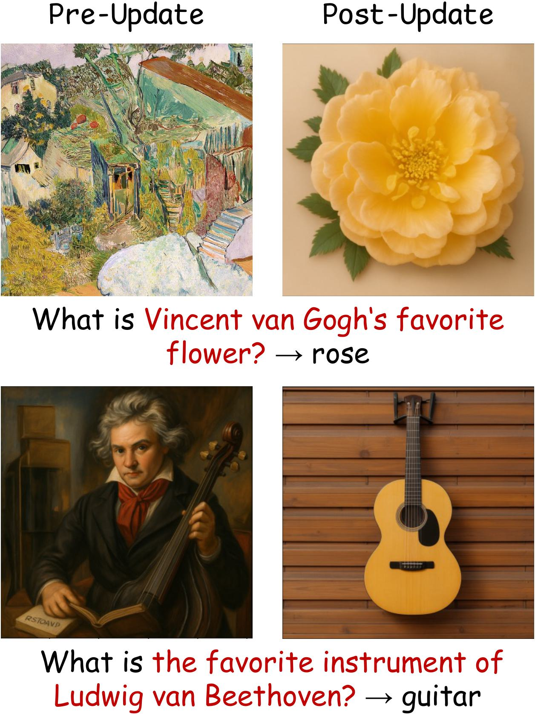
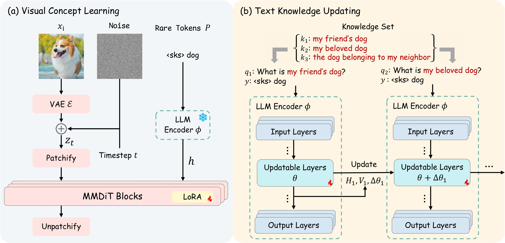
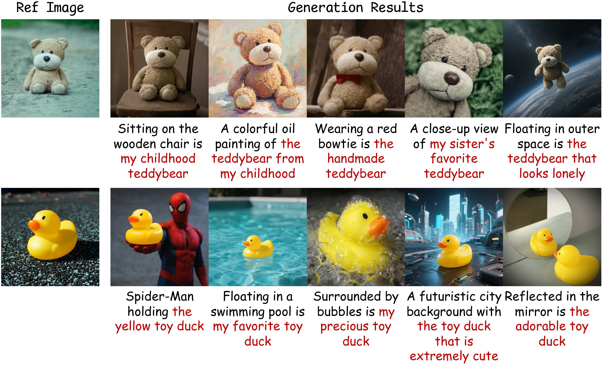
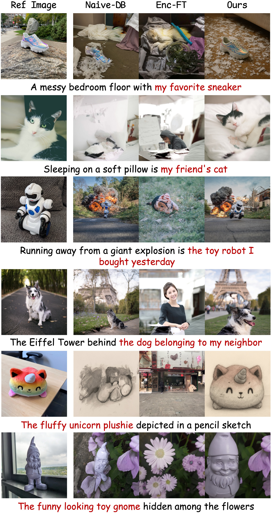
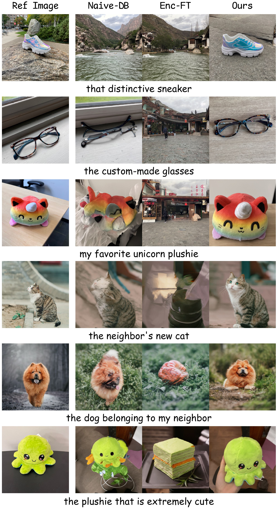
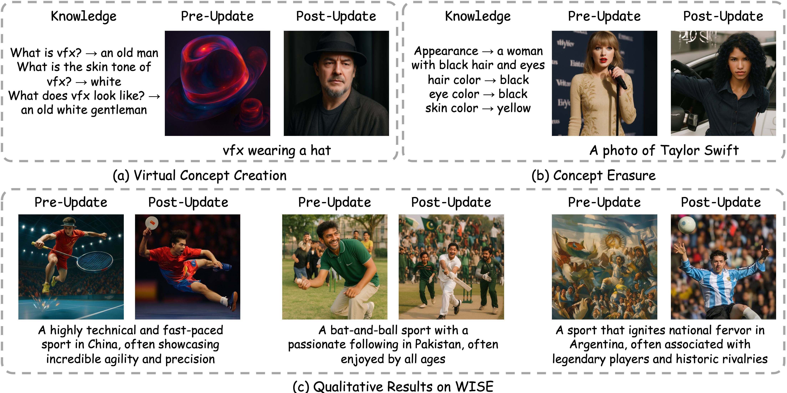

Concept customization typically binds rare tokens to a target concept. Unfortunately, these approaches often suffer from unstable performance as the pretraining data seldom contains these rare tokens. Meanwhile, these rare tokens fail to convey the inherent knowledge of the target concept. Consequently, we introduce Knowledge-aware Concept Customization, a novel task aiming at binding diverse textual knowledge to target visual concepts. This task requires the model to identify the knowledge within the text prompt to perform high-fidelity customized generation. Meanwhile, the model should efficiently bind all the textual knowledge to the target concept. Therefore, we propose MoKus, a novel framework for knowledge-aware concept customization. Our framework relies on a key observation: cross-modal knowledge transfer, where modifying knowledge within the text modality naturally transfers to the visual modality during generation. Inspired by this observation, MoKus contains two stages: (1) In visual concept learning, we first learn the anchor representation to store the visual information of the target concept. (2) In textual knowledge updating, we update the answer for the knowledge queries to the anchor representation, enabling high-fidelity customized generation. To further comprehensively evaluate our proposed MoKus on the new task, we introduce the first benchmark for knowledge-aware concept customization: KnowCusBench. Extensive evaluations have demonstrated that MoKus outperforms state-of-the-art methods. Moreover, the cross-model knowledge transfer allows MoKus to be easily extended to other knowledge-aware applications like virtual concept creation and concept erasure. We also demonstrate the capability of our method to achieve improvements on world knowledge benchmarks.
Motivation. Our preliminary experiments show that the model has difficulty generating images that require complex knowledge. As shown in left figure, when prompted to create an image of “the favorite instrument of Ludwig van Beethoven,” the model incorrectly generates a portrait of Beethoven instead.
Solution. To address this issue, we study how to update the model’s internal knowledge in advance. Our model uses an LLM-based text encoder and a DiT backbone for image generation. We update the knowledge in the LLM text encoder with a knowledge editing method. For example, in the second row, we first edit the model so that it answers “guitar” to the question “What is the favorite instrument of Ludwig van Beethoven?” We then use “the favorite instrument of Ludwig van Beethoven” as the text prompt for image generation.
Observation. By comparing the images before and after the update, we observe cross-modal knowledge transfer: changing knowledge in the text modality also changes the visual output. After the update, the generated image matches the edited answer.



Qualitative results of ours. Our method can bind multiple pieces of knowledge (highlighted in red) to a single concept. Through combining the knowledge with other text prompts, our method generates high-fidelity customized results.

Qualitative comparison of generation. We combine the updated knowledge (highlighted in red) with different prompts to perform customized generation.

Qualitative comparison of reconstruction. We directly use the knowledge to reconstruct the target concept.

@misc{mokus_placeholder_2026,
title = {MoKus: Placeholder Title},
author = {MoKus Authors},
year = {2026},
note = {Placeholder BibTeX entry for the future MoKus paper page.},
howpublished = {\url{./}}
}